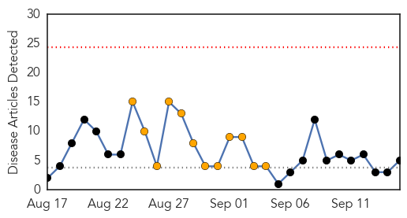
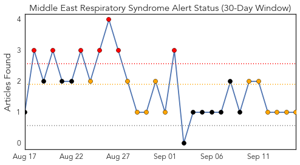
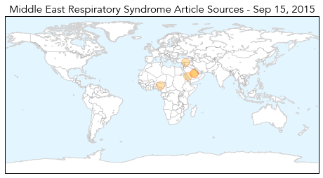
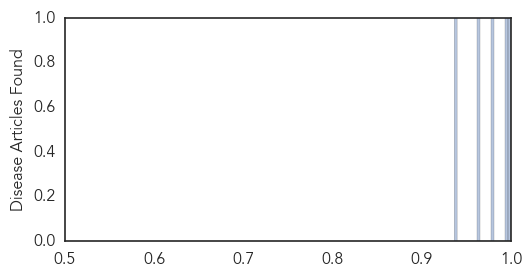

Toggle navigation
Early Warning
Daily Alerts
Middle East Respiratory Syndrome
Sep 15, 2015
Compare to:
-
Dengue Fever
Hemmorhagic Fever
Mold/Fungal Infection
Influenza
Meningitis
Pertussis / Whooping Cough
Cholera
Hepatitis
Chikungunya
Yellow Fever
Bubonic Plague
West Nile Virus
Swine Flu
Ebola
Measles
Unknown
Mumps
30 Day Trends
Web: 0
alerts
, 12
warnings
Twitter: 3
alerts
, 0
warnings
Top Articles:
0.999
More MERS in 3 Saudi cities as WHO recaps mission
0.996
Suspected MERS-CoV case tests negative
0.978
The Nation Nigeria
0.962
Health workers among 3 new Saudi MERS patients
0.936
WHO supports European countries in managing health needs of refugee and migrant influxes
Top Tweets:
No tweets found for Sep 15, 2015
Web/News Articles

Tweets

Article Locations

Article Confidences
